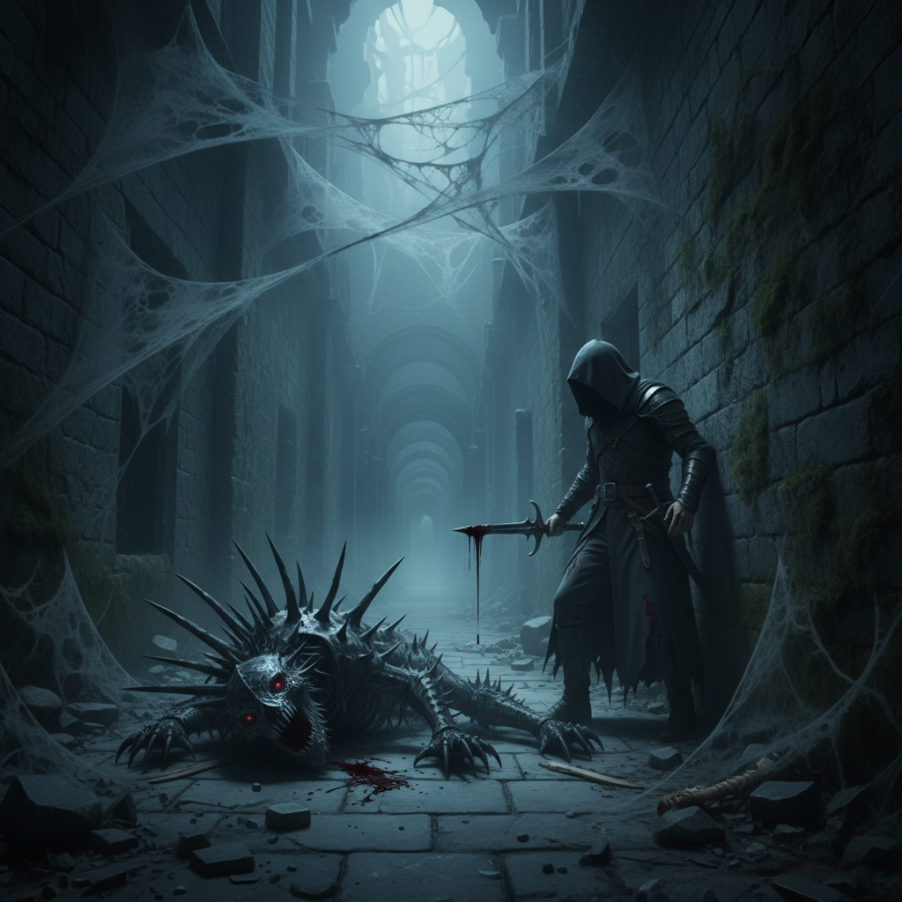

Capítulo 10
2026-03-07

La luz tenue que brillaba en el pasadizo se intensificó, iluminando una pared que antes había permanecido oculta. Isabel y Eduardo parpadearon asombrados ante la apariencia de una puerta enorme hecha de hierro forjado con extrañas inscripciones. El siseo de la criatura resonaba en el silencio, creando un ambiente que hacía presagiar peligros inminentes.
La alarma suave había aumentado hasta convertirse en un zumbido constante. Isabel se tensó mientras estudiaba los controles junto a Eduardo. "¿Qué crees que significa todo esto?" murmuró, señalando la puerta y las inscripciones que parecían ser de una lengua desconocida.
Eduardo asintió, su respiración acelerada reflejando su nerviosismo. "Algo antiguo", respondió, sus ojos clavados en los símbolos. "Pero es como si alguien estuviera tratando de darse a conocer".
La criatura siseó nuevamente, sus ojos verdes parpadeando con intensidad. Isabel sintió un escalofrío recorrer su espalda mientras la miraba fijamente. "Vamos", susurró Eduardo, tomando su mano y tirándola hacia atrás para indicarles que se prepararan. La criatura avanzó con ellos, sus pasos resonando en el silencio.
Isabel miró los controles una vez más, decidida a encontrar alguna pista sobre lo que estaba sucediendo. Tomó un control y comenzó a manipularlo lentamente. Un zumbido agudo se intensificó, seguido de un chirrido metálico que resonó en la sala.
La puerta se movió lentamente, abriéndose hacia ellos con un crujido de hierro viejo. Isabel y Eduardo intercambiaron una mirada de terror e intriga antes de cruzar el umbral.
El pasadizo que les había llevado a la sala ahora desembocaba en una gran estancia iluminada por una luz tenue y misteriosa. La criatura siseó, guiándolos hacia un centro del salón donde se encontraban varios espejos y artefactos antigüos dispuestos en una plataforma circular.
En el centro de la sala había un altar elevado, cubierto con una tela oscura que parecía brillar con su propia luz. Isabel avanzó hacia él con cautela, tocando ligeramente la tela que se deslizaba a un lado revelando una figura enmascarada sentada detrás del altar.
La figura se levantó lentamente, oculta tras una máscara de plata que parecía ser el reflejo perfecto de una cara antigua. "Buenas noches, hijos de la oscuridad", susurró en un tono siniestro, su voz resonando a través del salón.
Eduardo y Isabel se apartaron instintivamente, mirando al intruso con terror y asombro. La criatura siseó una vez más, su luz tenue creando una atmósfera perturbadora en el salón. "¿Quién eres?" preguntó Eduardo, intentando mantener la calma.
"Soy un guardián de la antigua verdad", respondió la figura con voz grave, quitándose la máscara para revelar una cara huesuda y canosa, llena de arrugas que parecían contar siglos de historia. "Y vosotros sois los elegidos para descubrir lo que ha sido ocultado durante siglos".
Isabel se tensó mientras asimilaba la información, su mente trabajando a mil por hora. "¿Qué quieres que hagamos?" preguntó con voz temblorosa.
"Debéis abrir la puerta de hierro", respondió el guardián, señalando hacia ella. "Pero advertiré que esto no será fácil. La puerta está protegida por un antiguo hechizo, y vosotros solo tenéis una oportunidad".
Eduardo miró a Isabel con determinación. "Entendido", murmuró, tomando su mano y juntos avanzaron hacia la puerta.
La criatura siseó nuevamente, su luz iluminando el camino hacia la puerta de hierro. Isabel y Eduardo se enfrentaron al hechizo con determinación, sabiendo que su destino estaba en juego.
### IMAGE_PROMPT ### Isabel y Eduardo frente a una gran puerta de hierro, guiados por una criatura misteriosa. ### SUMMARY ### Isabel y Eduardo descubren un altar antiguo y se enfrentan a un guardián misterioso que los obliga a abrir la puerta protegida por un hechizo.Mañana, nuevo capítulo.
Lo que dicen los lectores
Vuelvo cada día. Engancha de verdad.
El gancho del final me tiene enganchado.
Ya lo he recomendado. Muy bien escrito.